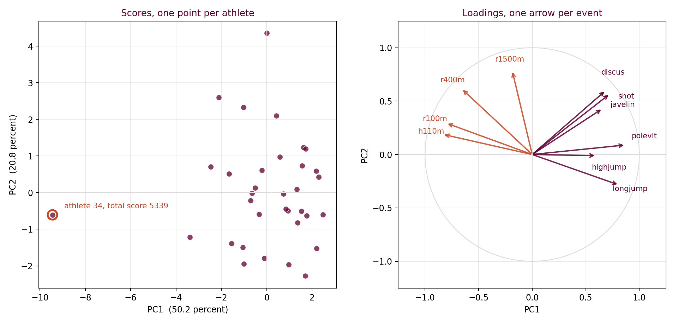
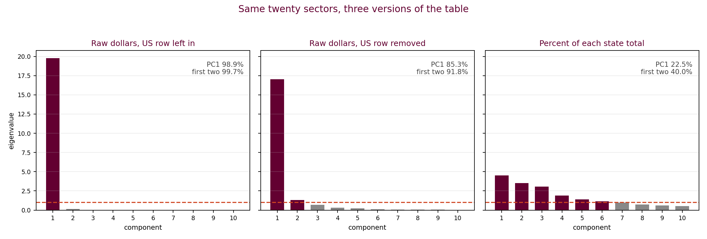

By the end of this lecture, students will be able to:
- Say what the true dimensionality of a dataset is, and recognize it in a three column dataset by looking at the cloud.
- Match the shape of an eigenvalue chart to the shape of the cloud it came from, on three datasets whose answer is visible.
- Find out for themselves, working with an AI assistant, how practitioners decide how many components to keep, and test what they are told against a case where they already know the answer.
- Read a score plot for rows that sit apart from the rest, and a loadings plot for what a component is made of.
- Recognize a dominant size component in a table of raw dollars and remove it by dividing each row by its own total.
- Choose a number of components when the available methods disagree, and say what the number is for.
On Tuesday your tool drew a bar chart of eigenvalues and nobody told you how to read it. Nobody told you on purpose. Today is the reading.
Start with three datasets that have three columns each, which means the whole dataset fits in a space you can look at. Drag each one around. The number you are looking for is how many directions the cloud actually uses, and in these three you can count it with your eyes. Everything after this hour happens on data where you cannot.
Three datasets, three columns each. Drag each one and watch it turn.
Count the directions the cloud actually uses. Not the number of columns, which is three every time, but the number of directions it needs in order to be the shape that it is.
The number you counted is the true dimensionality of the dataset. It is how many directions the data actually uses, and it is smaller than the number of columns whenever the columns repeat each other.
Three columns and one direction means two of those columns were saying what the first one had already said. Three columns and three directions means none of them was redundant and there is nothing to compress.
Every dataset has a number like this. In these three you can see it. In a table with ten columns or twenty you cannot, and no picture will ever show it to you.
Before you run anything:
- You could see the answer for all three of these. What are you going to do on a table with twenty columns?
- Suppose two columns in a business dataset say almost the same thing. What does that tell you about how the data was collected?
Run all three with your instructor, the same file at the same time. Load the file, take all three columns, and look at the bar chart of eigenvalues.
Keep the spinning picture of the same dataset open beside it. One question the whole way through: what do the two pictures have in common?
toy1D comes back with 2.9495, 0.0371 and 0.0134. One bar stands up and two lie flat.
The cloud has one long direction. The chart has one tall bar.
toy2D comes back with 1.9806, 0.9997 and 0.0197. Two bars stand up and one lies flat.
The cloud is a sheet, which has two directions in it. The chart has two tall bars.
Write 0.9997 down somewhere you will still be able to find it in twenty minutes. No reason is being given for that yet.
toy3D comes back with 1.0507, 0.9892 and 0.9601. Three bars of nearly the same height.
The cloud fills the box. Nothing about it is flat, and nothing about the chart is either.
The chart has the same shape as the cloud, every time. Long direction, tall bar. Flat direction, flat bar.
The only reason you can say that is that you were able to look at the cloud. The decathlon has ten columns and the state tables have twenty, so for the rest of today nobody in this room will see the cloud again.
So the eigenvalues are all you get. Fifteen minutes to work out what to do with them.
Carry these into your own exploration:
- You have a list of eigenvalues and no picture. What would you have to believe in order to turn that list into a number of components?
- toy3D gave three bars of the same height. If a real dataset did that, what would you do?
Copy this block and paste it into Hokie AI to begin your session.
Twelve minutes, one thread, at most ten exchanges. Nothing on this page tells you how to choose the number of principal components to keep, because working that out is the task.
Keep the conversation general. Do not bring the three toy datasets into it, since three columns is too small a case to reason about honestly, and what you want here is the practice as analysts actually carry it out.
One question per message. A single message holding all four questions comes back as one undifferentiated essay.
First question. Ask why the number of principal components you keep matters, and what you would do differently with two principal components and with five. Start with the purpose, because a method whose purpose you cannot state is a method you will misapply.
Second question. Ask how analysts decide how many principal components to keep. Ask for the methods used in practice, by name, and ask what quantity each method looks at.
Third question. Ask what an analyst should do when two of those methods give different numbers of principal components for the same dataset. Do not accept the first answer. Ask what it would need to know about your dataset and your purpose before it could give you a better one.
Fourth question. Ask what knowing the number of principal components gives a business. You are about to hand a manager a two dimensional picture of a twenty column table. Ask what that picture claims and what it leaves out.
Further questions of your own are welcome, because the ten exchanges are yours.
- Click Copy opening marker and paste it into Hokie AI to begin this block.
- Interact with Hokie AI: ask questions, explore, respond. All of this exchange belongs to this block.
- When finished, use the Copy closing marker button below to close the block in your thread.
When you have finished your exchange, copy this closing marker and paste it into Hokie AI to close the block.
Real tables now, and nobody knows how many principal components either of them deserves. The decathlon has ten columns and the state tables have twenty, so no picture of the data will tell you, and the methods you just went and found are what you have.
The first one you read and do not run, because the eigenvalues are the easy part and what the components mean is the work.
A loadings plot puts one arrow on the page for each original column, with the first principal component across the horizontal axis and the second up the vertical one.
You name a principal component by reading the columns whose arrows lie along its axis. The columns strung out along the horizontal axis are the ones the first component is made of, so whatever those columns have in common is what the first component measures. The columns standing up the vertical axis are what the second component is made of. A column whose arrow sits at a diagonal belongs to both.
Direction also carries sign. Two arrows pointing the same way are columns that move together. Two arrows pointing opposite ways are columns that move in opposite directions, which is sometimes a real opposition in the world and sometimes an artifact of how the columns were measured.
The fourth box on the card is about length, and it answers a different question from the other three. Direction tells you which component a column belongs to. Length tells you how much of that column the picture is holding at all. Each arrow runs from the origin to the point whose horizontal coordinate is that column's correlation with the first principal component and whose vertical coordinate is its correlation with the second, so the square of the arrow's length is the share of that column's variance the two components account for between them. An arrow of length 0.9 means the two components hold 81 percent of that column, and an arrow of length 0.5 means they hold 25 percent.
Read the two cases differently. A long arrow means the column is well described by this picture, so what you read off its direction can be trusted. A short arrow means most of that column lives in the components you did not keep, so the picture is nearly silent about it, and the direction it appears to point can swing on small changes in the data. A short arrow is never evidence that a column is unimportant. Every column was standardized to the same variance before any of this ran, so a short arrow says only that the column does not line up with the two directions that came out first.

Ten events, thirty four athletes, and the eigenvalues are 5.024, 2.080 and 0.735. Run whatever methods you found in the last fifteen minutes against those three eigenvalues. Every method returns two principal components here, and this is the only table today where they will agree.
Look at the score plot first. One athlete sits at minus 9.5 on PC1 when the next lowest is minus 3.4. His total score is 5339 and the next man up scored 6907, so nothing is broken in the data and he really did come last by a distance. A point sitting apart in a score plot is a question and not yet a finding, and the question is whether the row is wrong or the world is.
Now the loadings plot, read off the card above. The four running events point one way and the six field events point the other, and the reason is arithmetic and not athletic. A running event is measured in seconds and a smaller number is better, while a throw or a jump is measured in meters and a bigger number is better. Two columns pointing in opposite directions here are ten events that all reward the same athlete, recorded on two scales that run opposite ways.
So read the horizontal axis and name the first principal component. The pole vault, the long jump, the shot, the discus, the javelin, the 100m and the 110m hurdles are all strung out along it, which is seven events of the ten, spanning running, jumping and throwing. What those seven have in common is being good at the decathlon, so the first principal component is overall ability. It correlates 0.991 with the official decathlon score, which nobody supplied to the analysis.
Now read the vertical axis and name the second principal component. The 1500m stands almost straight up, loading minus 0.19 on the first component and 0.79 on the second, so the first component says almost nothing about it. The 400m and the throws lean the same way, and the long jump leans against them. Distance running and heavy throwing at one end, explosive speed at the other, so the second principal component is the trade off between endurance with strength and short burst speed.
One arrow is noticeably short. The high jump runs 0.60 long, so the two components hold 36 percent of it, against 85 percent for the shot put and between 62 and 85 percent for everything else. The high jump lies near the horizontal axis and reads as an ability event, and its length says the picture is only 36 percent sure of even that.
Two events, the 1500m and the long jump, would have looked unremarkable in the eigenvalue list. The loadings plot is where they separate, and naming the second component is impossible without it.
Now run the three state tables yourself, in the order they appear on the download card. Each one is twenty sectors of economic output. For every run, take all twenty sector columns.

stategdp2010.csv is the original table. It puts 98.9 percent of the variance on the first principal component, and every loading on that component sits near 1.00. Every method returns one principal component.
Ask what the first principal component is. It is size. Big states have more of every sector, so every column moves with every other column, and the analysis has discovered that California is larger than Vermont. True, and worth nothing.
Look at the score plot and you will find the United States row at 31.0 while California, the largest state, is at 2.9. The United States row is the sum of the other rows, so it is not an observation. The total column has the same problem, since it is the sum of the other columns.
stategdp2010states.csv removes both of them. The first principal component falls from 98.9 percent to 85.3 percent and the second eigenvalue rises to 1.310. A threshold near one now returns two principal components, and the methods that count variance still return one. Removing one row and one column changed one method's answer and left the others where they were. Size still dominates, because a table of dollars is a table about how big each state is, whatever you delete from it.
stategdp2010percent.csv divides every number by its own row total, so each state is described by the share of its economy in each sector and not by its dollars. The eigenvalues are 4.493, 3.498, 3.071, 1.879, 1.411, 1.148 and 0.993. Run your methods again. A threshold near one returns six principal components, or seven if you take near seriously. Counting to about seventy percent of the variance returns five. Looking for where the chart stops falling steeply returns three.
Removing size did not make the question easier. It made the question real. While one thing dominates every column, the answer looks decisive and tells you nothing, and once that thing is gone the structure underneath turns out to be genuinely multidimensional. Disagreement among the methods is information about the data.
How many principal components would you keep for stategdp2010percent.csv? Hands up for three, then for five, then for six. Your instructor reads the room out loud.
Then two or three of you say which method gave you that number, and say what you would write in a report so that a manager reading it knows what the remaining components were carrying.
Take these into the reflection:
- The dollars tables gave one confident answer and the percentage table gave three competing answers. Which one would you rather hand to a decision maker, and what does that say about confident answers?
- Tuesday's plant floor had twenty columns and two real dimensions. Today the same question had no visible answer at all. What did you rely on today that you did not need on Tuesday?
Now write your reflection, in your own words and without help from the AI.
Your reflection needs all four of these. Say how many principal components you would keep for stategdp2010percent.csv and which method decided it for you AND name one thing the decathlon loadings plot told you that the eigenvalue list on its own could not AND say what changed between the dollars table and the percent table, and why dividing each row by its own total did that AND name a dataset from your own work or your own field where you would run PCA, and say what the first two components would have to mean before the result was worth reporting. Respond to all four.
The fourth is the one that separates a good reflection from an adequate one. Naming a dataset is not enough. Say what the components would have to turn out to be, and say what you would do if they turned out to be size instead.
Write 80 to 160 words.
Write your response in the box below (target: 80 to 160 words), then click Copy and paste into Hokie AI.
Export this thread as a .txt file, then upload it to the Canvas assignment. Your work is not submitted until Canvas shows your file.
Open the Canvas assignment